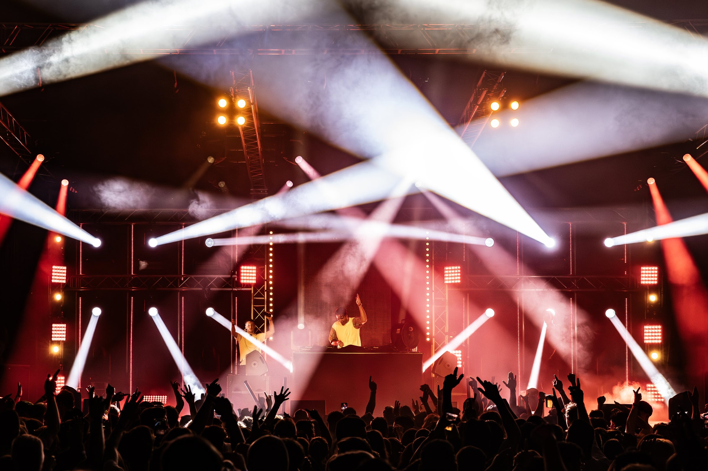

GTF Franzen / Lighting and video CH 03
Lighting
and video
Stage lighting, site lighting and LED walls. Designed, programmed and operated by our own team.
Lighting decides how a night feels, and what a site looks like after dark.
We design the lighting around your programme: from a stage with moving heads, beams and strobes to lighting across an entire site.
With DMT LED walls we show visuals, sponsors or live footage from the stage. Everything is programmed and run during the show by one of our lighting technicians.
- Lighting design and programming
- Moving heads, washes, beams and strobes
- Site lighting for paths, tents and buildings
- LED walls and screens
- Truss and rigging
- Operation during the show
Photo: Highlite
How we work
Design
We make a plan in advance with positions, colours and mood, so it is clear what is coming.
Programming
Cues and scenes are prepared in advance, matched to the artists and the running order.
Show
One of our lighting technicians runs the show live.
Frequently asked questions
Can you supply ambient lighting only?
Yes. Not every event needs a light show. Sometimes good ambient or site lighting is exactly right.
Do you have LED walls?
Yes. We have our own LED panels (DMT Pixelmesh) for backdrops, screens and visuals.

Your
event?
Tell us what you have in mind. You will hear back from the people who will actually build it.
info@franzenbocholtz.nl